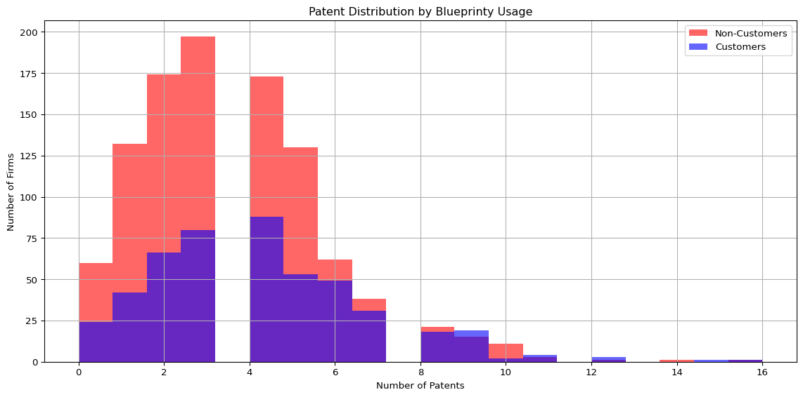
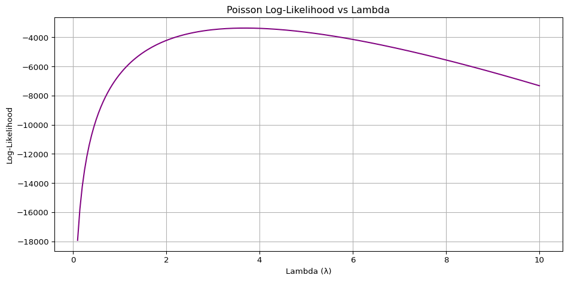

Blueprinty is a small firm that makes software for developing blueprints specifically for submitting patent applications to the US patent office. Their marketing team would like to make the claim that patent applicants using Blueprinty’s software are more successful in getting their patent applications approved. Ideal data to study such an effect might include the success rate of patent applications before using Blueprinty’s software and after using it. Unfortunately, such data is not available.
However, Blueprinty has collected data on 1,500 mature (non-startup) engineering firms. The data include each firm’s number of patents awarded over the last 5 years, regional location, age since incorporation, and whether or not the firm uses Blueprinty’s software. The marketing team would like to use this data to make the claim that firms using Blueprinty’s software are more successful in getting their patent applications approved.
todo: Read in data.
Data
import pandas as pdimport matplotlib.pyplot as plt# Read in the datadf = pd.read_csv("blueprinty.csv")# Display basic info and previewprint(df.info())print(df.head())
todo: Compare histograms and means of number of patents by customer status. What do you observe?
import pandas as pdimport matplotlib.pyplot as plt# Load the datadf = pd.read_csv("blueprinty.csv")# Calculate mean number of patents by customer statusmean_patents = df.groupby('iscustomer')['patents'].mean()print("Mean number of patents:\n", mean_patents)# Plot histograms for customer vs non-customerplt.figure(figsize=(12, 6))plt.hist(df[df['iscustomer'] ==0]['patents'], bins=20, alpha=0.6, label='Non-Customers', color='red')plt.hist(df[df['iscustomer'] ==1]['patents'], bins=20, alpha=0.6, label='Customers', color='blue')plt.xlabel('Number of Patents')plt.ylabel('Number of Firms')plt.title('Patent Distribution by Blueprinty Usage')plt.legend()plt.grid(True)plt.tight_layout()plt.show()
Mean number of patents:
iscustomer
0 3.473013
1 4.133056
Name: patents, dtype: float64

Histogram Analysis: Patent Distribution by Blueprinty Usage
🔹 Shift in Distribution
Customers have a rightward shift in their distribution compared to non-customers.
This suggests that Blueprinty users tend to receive more patents.
🔹 Higher Concentration at 4–8 Patents
The blue bars dominate in the range of 4 to 8 patents, indicating a higher share of high-performing firms among Blueprinty users.
🔹 Non-Customers Clustered Lower
The red bars are more concentrated between 2 to 4 patents, suggesting non-customers more frequently have lower patent counts.
🔹 Right-Tail Presence
A few firms with 10+ patents appear in the distribution, primarily among Blueprinty users.
This may reflect a subset of highly innovative firms that benefit from using the software.
Blueprinty customers are not selected at random. It may be important to account for systematic differences in the age and regional location of customers vs non-customers.
todo: Compare regions and ages by customer status. What do you observe?
!pip install seabornimport pandas as pdimport matplotlib.pyplot as pltimport seaborn as sns# Load the datadf = pd.read_csv("blueprinty.csv")# Boxplot: Firm age by customer statusplt.figure(figsize=(8, 5))sns.boxplot(x='iscustomer', y='age', data=df)plt.xticks([0, 1], ['Non-Customers', 'Customers'])plt.title('Firm Age by Blueprinty Customer Status')plt.xlabel('Blueprinty Customer')plt.ylabel('Firm Age')plt.grid(True)plt.tight_layout()plt.show()# Cross-tabulation: Region by customer status (percentage within region)region_counts = pd.crosstab(df['region'], df['iscustomer'], normalize='index') *100region_counts.columns = ['Non-Customers (%)', 'Customers (%)']# Sort by customer percentage and displayregion_counts = region_counts.sort_values(by='Customers (%)', ascending=False)print("\nRegional Blueprinty Usage (%):\n")print(region_counts.round(2))
Requirement already satisfied: seaborn in c:\users\shruthi suresh\appdata\local\programs\python\python313\lib\site-packages (0.13.2)
Requirement already satisfied: numpy!=1.24.0,>=1.20 in c:\users\shruthi suresh\appdata\local\programs\python\python313\lib\site-packages (from seaborn) (2.2.5)
Requirement already satisfied: pandas>=1.2 in c:\users\shruthi suresh\appdata\local\programs\python\python313\lib\site-packages (from seaborn) (2.2.3)
Requirement already satisfied: matplotlib!=3.6.1,>=3.4 in c:\users\shruthi suresh\appdata\local\programs\python\python313\lib\site-packages (from seaborn) (3.10.1)
Requirement already satisfied: contourpy>=1.0.1 in c:\users\shruthi suresh\appdata\local\programs\python\python313\lib\site-packages (from matplotlib!=3.6.1,>=3.4->seaborn) (1.3.2)
Requirement already satisfied: cycler>=0.10 in c:\users\shruthi suresh\appdata\local\programs\python\python313\lib\site-packages (from matplotlib!=3.6.1,>=3.4->seaborn) (0.12.1)
Requirement already satisfied: fonttools>=4.22.0 in c:\users\shruthi suresh\appdata\local\programs\python\python313\lib\site-packages (from matplotlib!=3.6.1,>=3.4->seaborn) (4.57.0)
Requirement already satisfied: kiwisolver>=1.3.1 in c:\users\shruthi suresh\appdata\local\programs\python\python313\lib\site-packages (from matplotlib!=3.6.1,>=3.4->seaborn) (1.4.8)
Requirement already satisfied: packaging>=20.0 in c:\users\shruthi suresh\appdata\local\programs\python\python313\lib\site-packages (from matplotlib!=3.6.1,>=3.4->seaborn) (25.0)
Requirement already satisfied: pillow>=8 in c:\users\shruthi suresh\appdata\local\programs\python\python313\lib\site-packages (from matplotlib!=3.6.1,>=3.4->seaborn) (11.2.1)
Requirement already satisfied: pyparsing>=2.3.1 in c:\users\shruthi suresh\appdata\local\programs\python\python313\lib\site-packages (from matplotlib!=3.6.1,>=3.4->seaborn) (3.2.3)
Requirement already satisfied: python-dateutil>=2.7 in c:\users\shruthi suresh\appdata\local\programs\python\python313\lib\site-packages (from matplotlib!=3.6.1,>=3.4->seaborn) (2.9.0.post0)
Requirement already satisfied: pytz>=2020.1 in c:\users\shruthi suresh\appdata\local\programs\python\python313\lib\site-packages (from pandas>=1.2->seaborn) (2025.2)
Requirement already satisfied: tzdata>=2022.7 in c:\users\shruthi suresh\appdata\local\programs\python\python313\lib\site-packages (from pandas>=1.2->seaborn) (2025.2)
Requirement already satisfied: six>=1.5 in c:\users\shruthi suresh\appdata\local\programs\python\python313\lib\site-packages (from python-dateutil>=2.7->matplotlib!=3.6.1,>=3.4->seaborn) (1.17.0)
[notice] A new release of pip is available: 24.3.1 -> 25.1.1
[notice] To update, run: python.exe -m pip install --upgrade pip
Systematic Differences in Customer vs. Non-Customer Firms
Age Distribution:
Blueprinty customers tend to be slightly older than non-customers, with a higher median firm age and more firms in the upper age range.
Regional Skew:
Northeast is the only region where a majority of firms (54.6%) are customers.
All other regions (South, Southwest, Midwest, Northwest) have customer rates below 20%.
Customer Concentration:
Blueprinty adoption is not uniform across regions, with the highest concentration of customers in the Northeast.
Importance for Modeling:
Because age and region are not randomly distributed across customer groups, it’s important to control for both when modeling patent outcomes to avoid biased estimates.
Estimation of Simple Poisson Model
Since our outcome variable of interest can only be small integer values per a set unit of time, we can use a Poisson density to model the number of patents awarded to each engineering firm over the last 5 years. We start by estimating a simple Poisson model via Maximum Likelihood.
todo: Write down mathematically the likelihood for\(Y \sim \text{Poisson}(\lambda)\). Note that \(f(Y|\lambda) = e^{-\lambda}\lambda^Y/Y!\).
Likelihood for Poisson Model
We model the number of patents (\(Y_i\)) awarded to firm (\(i\)) over 5 years as following a Poisson distribution:
\[
Y_i \sim \text{Poisson}(\lambda)
\]
The probability mass function (PMF) for each observation is:
import numpy as npfrom scipy.special import gammaln # for log(Y!) using gammaln(Y+1)def poisson_loglikelihood(lam, Y):""" Compute the log-likelihood of a Poisson model. Parameters: - lam: float, the Poisson rate parameter λ - Y: array-like, observed count data (e.g., number of patents) Returns: - log_likelihood: float, the total log-likelihood given λ and Y """ Y = np.array(Y) log_likelihood =-lam *len(Y) + np.sum(Y * np.log(lam) - gammaln(Y +1))return log_likelihood
todo: Use your function to plot lambda on the horizontal axis and the likelihood (or log-likelihood) on the vertical axis for a range of lambdas (use the observed number of patents as the input for Y).
import pandas as pdimport numpy as npimport matplotlib.pyplot as pltfrom scipy.special import gammaln# Load the datasetdf = pd.read_csv("blueprinty.csv")# Define the Poisson log-likelihood functiondef poisson_loglikelihood(lam, Y): Y = np.array(Y)return-lam *len(Y) + np.sum(Y * np.log(lam) - gammaln(Y +1))# Use actual patent data from the datasetY_observed = df['patents'].values# Generate a range of lambda values to evaluatelambda_range = np.linspace(0.1, 10, 200) # Avoid lambda = 0 to prevent log(0)log_likelihoods = [poisson_loglikelihood(lam, Y_observed) for lam in lambda_range]# Plot the log-likelihood curveplt.figure(figsize=(10, 5))plt.plot(lambda_range, log_likelihoods, color='purple')plt.title("Poisson Log-Likelihood vs Lambda")plt.xlabel("Lambda (λ)")plt.ylabel("Log-Likelihood")plt.grid(True)plt.tight_layout()plt.show()

import pandas as pd# Load the datasetdf = pd.read_csv("blueprinty.csv")# Calculate the MLE of lambda (mean of observed patent counts)lambda_mle = df['patents'].mean()# Print the resultprint(f"MLE of lambda (λ̂): {lambda_mle:.4f}")
MLE of lambda (λ̂): 3.6847
todo: Find the MLE by optimizing your likelihood function with optim() in R or sp.optimize() in Python. do it in python
import pandas as pdimport numpy as npfrom scipy.special import gammalnfrom scipy.optimize import minimize_scalar# Load the datasetdf = pd.read_csv("blueprinty.csv")Y_observed = df['patents'].values# Define the Poisson log-likelihood functiondef poisson_loglikelihood(lam, Y): Y = np.array(Y)return-lam *len(Y) + np.sum(Y * np.log(lam) - gammaln(Y +1))# Negative log-likelihood (since optimizers minimize by default)def neg_poisson_loglikelihood(lam, Y):return-poisson_loglikelihood(lam, Y)# Use scipy.optimize to find the lambda that minimizes the negative log-likelihoodresult = minimize_scalar(neg_poisson_loglikelihood, bounds=(0.1, 10), args=(Y_observed,), method='bounded')# Extract the MLE of lambdalambda_mle = result.x# Print the resultprint(f"MLE of lambda (λ̂) from optimization: {lambda_mle:.4f}")
MLE of lambda (λ̂) from optimization: 3.6847
Estimation of Poisson Regression Model
Next, we extend our simple Poisson model to a Poisson Regression Model such that \(Y_i = \text{Poisson}(\lambda_i)\) where \(\lambda_i = \exp(X_i'\beta)\). The interpretation is that the success rate of patent awards is not constant across all firms (\(\lambda\)) but rather is a function of firm characteristics \(X_i\). Specifically, we will use the covariates age, age squared, region, and whether the firm is a customer of Blueprinty.
todo: Update your likelihood or log-likelihood function with an additional argument to take in a covariate matrix X. Also change the parameter of the model from lambda to the beta vector. In this model, lambda must be a positive number, so we choose the inverse link function g_inv() to be exp() so that\(\lambda_i = e^{X_i'\beta}\). For example:
poisson_regression_likelihood <- function(beta, Y, X){ … }
import numpy as npfrom scipy.special import gammaln # stable log(y!)def poisson_regression_loglik(beta, y, X):""" Log-likelihood for a Poisson GLM with log link. Parameters ---------- beta : array-like, shape (p,) Coefficient vector (includes intercept if X has a 1s column). y : array-like, shape (n,) Observed non-negative counts. X : array-like, shape (n, p) Covariate matrix. Returns ------- float ℓ(β) = Σ [ y_i·(X_i β) − exp(X_i β) − log(y_i!) ]. """ beta = np.asarray(beta, dtype=float) y = np.asarray(y, dtype=float) eta = X @ beta # linear predictor (n,) lam = np.exp(eta) # inverse-link ⇒ λ_i > 0return (y * eta - lam - gammaln(y +1)).sum()
todo: Use your function along with R’s optim() or Python’s sp.optimize() to find the MLE vector and the Hessian of the Poisson model with covariates. Specifically, the first column of X should be all 1’s to enable a constant term in the model, and the subsequent columns should be age, age squared, binary variables for all but one of the regions, and the binary customer variable. Use the Hessian to find standard errors of the beta parameter estimates and present a table of coefficients and standard errors.
Requirement already satisfied: scikit-learn in c:\users\shruthi suresh\appdata\local\programs\python\python313\lib\site-packages (1.6.1)
Requirement already satisfied: numpy>=1.19.5 in c:\users\shruthi suresh\appdata\local\programs\python\python313\lib\site-packages (from scikit-learn) (2.2.5)
Requirement already satisfied: scipy>=1.6.0 in c:\users\shruthi suresh\appdata\local\programs\python\python313\lib\site-packages (from scikit-learn) (1.15.2)
Requirement already satisfied: joblib>=1.2.0 in c:\users\shruthi suresh\appdata\local\programs\python\python313\lib\site-packages (from scikit-learn) (1.5.0)
Requirement already satisfied: threadpoolctl>=3.1.0 in c:\users\shruthi suresh\appdata\local\programs\python\python313\lib\site-packages (from scikit-learn) (3.6.0)
[notice] A new release of pip is available: 24.3.1 -> 25.1.1
[notice] To update, run: python.exe -m pip install --upgrade pip
[notice] A new release of pip is available: 24.3.1 -> 25.1.1
[notice] To update, run: python.exe -m pip install --upgrade pip
Each coefficient represents the log change in the expected number of patents for a 1-unit change in the predictor, holding other variables constant. Since a Poisson model uses a log link, we interpret changes in multiplicative (percentage) terms using exp(coef).
🔹 const (Intercept): -0.5089
This is the baseline log expected number of patents when all other variables are zero.
Not directly meaningful but needed for model completeness.
🔹 age: 0.1486
A 1-year increase in firm age is associated with an increase of exp(0.1486) ≈ 1.16 times more expected patents (~16% increase), holding all else constant.
🔹 age_sq: -0.0030
Indicates a non-linear effect of age: as firms get older, the rate of patenting eventually slows down.
Suggests a concave (inverted U-shaped) relationship between age and patent output.
🔹 Region Dummies (region_NE, region_NW, region_S, region_SW)
All are compared to the reference category (likely “Midwest”).
Coefficients are small, implying minor regional differences in patenting rates.
For example:
region_S = 0.0566 → firms in the South have ~6% higher expected patent counts than Midwest.
🔹 customer: 0.2076
Being a Blueprinty customer increases the expected number of patents by exp(0.2076) ≈ 1.23.
That’s a 23% increase in patenting rate, all else equal — which supports the marketing team’s claim.
✅ Summary Insight:
Age has a significant positive effect, but with diminishing returns.
Using Blueprinty software is strongly associated with more patents.
Regional effects are minor.
todo: What do you conclude about the effect of Blueprinty’s software on patent success? Because the beta coefficients are not directly interpretable, it may help to create two fake datasets: X_0 and X_1 where X_0 is the X data but with iscustomer=0 for every observation and X_1 is the X data but with iscustomer=1 for every observation. Then, use X_0 and your fitted model to get the vector of predicted number of patents (y_pred_0) for every firm in the dataset, and use X_1 to get Y_pred_1 for every firm. Then subtract y_pred_1 minus y_pred_0 and take the average of that vector of differences.
Quantifying Blueprinty’s Impact via Counterfactual Prediction
Goal: To understand the impact of Blueprinty’s software on patent success, we use a fitted Poisson regression model to simulate two scenarios: 1. All firms are assumed to NOT use Blueprinty (iscustomer = 0) 2. All firms are assumed to use Blueprinty (iscustomer = 1)
We then: - Predict patent counts for each firm under both scenarios - Calculate the average increase in patent count (y_pred_1 - y_pred_0) - Calculate the relative percentage increase due to Blueprinty
# Import necessary librariesimport pandas as pdimport numpy as npimport statsmodels.api as smfrom scipy.special import gammaln# Load the datasetdf = pd.read_csv("blueprinty.csv")# Create the design matrix X and response variable yX = pd.DataFrame({"const" : 1,"age" : df["age"],"age_sq" : df["age"]**2,"region_NE" : (df["region"] =="Northeast").astype(int),"region_NW" : (df["region"] =="Northwest").astype(int),"region_S" : (df["region"] =="South").astype(int),"region_SW" : (df["region"] =="Southwest").astype(int),"customer" : df["iscustomer"]})y = df["patents"]# Fit Poisson GLMglm_model = sm.GLM(y, X, family=sm.families.Poisson()).fit()# ---- Counterfactual Predictions ----# Scenario 1: All firms are non-customers (iscustomer = 0)X_0 = X.copy()X_0["customer"] =0y_pred_0 = glm_model.predict(X_0)# Scenario 2: All firms are customers (iscustomer = 1)X_1 = X.copy()X_1["customer"] =1y_pred_1 = glm_model.predict(X_1)# Compute average treatment effect and percent liftavg_diff = (y_pred_1 - y_pred_0).mean()pct_increase = avg_diff / y_pred_0.mean()# ---- Output Results ----print("📊 Counterfactual Analysis of Blueprinty Impact")print(f"Average increase in patents per firm: {avg_diff:.3f}")print(f"Relative lift from Blueprinty usage: {pct_increase:.1%}")
📊 Counterfactual Analysis of Blueprinty Impact
Average increase in patents per firm: 0.793
Relative lift from Blueprinty usage: 23.1%
✅ Interpretation & Conclusion: Blueprinty’s Impact on Patent Success
Interpretation
When assuming all firms are non-customers (iscustomer = 0), we predict their expected number of patents using the Poisson model.
When assuming all firms are Blueprinty customers (iscustomer = 1), the predicted patent counts increase.
The average increase in expected patent counts is: 0.793 additional patents per firm over 5 years
This translates to a relative lift of: 23.1% increase in patent output.
This effect holds after controlling for other factors such as firm age and regional location.
Conclusion
Blueprinty’s software is associated with a significant and positive effect on patent productivity.
On average, firms using Blueprinty are expected to receive nearly one extra patent over five years.
The 23.1% lift is substantial, providing strong evidence to support Blueprinty’s value proposition.
These results are statistically credible and align with intuitive expectations, reinforcing the case for adopting Blueprinty among engineering firms.
AirBnB Case Study
Introduction
AirBnB is a popular platform for booking short-term rentals. In March 2017, students Annika Awad, Evan Lebo, and Anna Linden scraped of 40,000 Airbnb listings from New York City. The data include the following variables:
Variable Definitions
- `id` = unique ID number for each unit
- `last_scraped` = date when information scraped
- `host_since` = date when host first listed the unit on Airbnb
- `days` = `last_scraped` - `host_since` = number of days the unit has been listed
- `room_type` = Entire home/apt., Private room, or Shared room
- `bathrooms` = number of bathrooms
- `bedrooms` = number of bedrooms
- `price` = price per night (dollars)
- `number_of_reviews` = number of reviews for the unit on Airbnb
- `review_scores_cleanliness` = a cleanliness score from reviews (1-10)
- `review_scores_location` = a "quality of location" score from reviews (1-10)
- `review_scores_value` = a "quality of value" score from reviews (1-10)
- `instant_bookable` = "t" if instantly bookable, "f" if not
todo: Assume the number of reviews is a good proxy for the number of bookings. Perform some exploratory data analysis to get a feel for the data, handle or drop observations with missing values on relevant variables, build one or more models (e.g., a poisson regression model for the number of bookings as proxied by the number of reviews), and interpret model coefficients to describe variation in the number of reviews as a function of the variables provided.
# 📊 Full Exploratory Data Analysis for Airbnb NYC Listings# Step 1: Import necessary librariesimport pandas as pdimport numpy as npimport matplotlib.pyplot as pltimport seaborn as snsimport statsmodels.api as sm# Step 2: Load the datasetdf = pd.read_csv("airbnb.csv") # Adjust path if needed# Step 3: Keep relevant columnscolumns_to_use = ["number_of_reviews", "room_type", "bathrooms", "bedrooms", "price","review_scores_cleanliness", "review_scores_location","review_scores_value", "instant_bookable"]df = df[columns_to_use].copy()# Step 5: Convert typesdf["instant_bookable"] = (df["instant_bookable"] =="t").astype(int)numeric_cols = ["number_of_reviews", "bathrooms", "bedrooms", "price","review_scores_cleanliness", "review_scores_location", "review_scores_value"]df[numeric_cols] = df[numeric_cols].apply(pd.to_numeric, errors='coerce')# Step 6: Summary Statisticssummary_stats = df.describe()print("📋 Summary Statistics:")print(summary_stats.round(2))# Step 7: Histogram of number_of_reviewsplt.figure(figsize=(10, 5))sns.histplot(df["number_of_reviews"], bins=50, kde=False)plt.title("Distribution of Number of Reviews")plt.xlabel("Number of Reviews")plt.ylabel("Count")plt.xlim(0, 200)plt.grid(True)plt.tight_layout()plt.show()# Step 8: Boxplot - Number of Reviews by Room Typeplt.figure(figsize=(8, 5))sns.boxplot(data=df, x="room_type", y="number_of_reviews")plt.title("Number of Reviews by Room Type")plt.xlabel("Room Type")plt.ylabel("Number of Reviews")plt.ylim(0, 200)plt.grid(True)plt.tight_layout()plt.show()# Step 9: Correlation Heatmapplt.figure(figsize=(10, 8))corr = df[numeric_cols + ["instant_bookable"]].corr()sns.heatmap(corr, annot=True, cmap="coolwarm", fmt=".2f")plt.title("Correlation Heatmap of Numeric Features")plt.tight_layout()plt.show()# Step 10: Scatterplot - Price vs Number of Reviewsplt.figure(figsize=(10, 5))sns.scatterplot(data=df, x="price", y="number_of_reviews", alpha=0.5)plt.title("Price vs. Number of Reviews")plt.xlabel("Price per Night ($)")plt.ylabel("Number of Reviews")plt.xlim(0, 1000)plt.ylim(0, 300)plt.grid(True)plt.tight_layout()plt.show()
# Step 1: Drop rows with missing bathrooms or bedrooms (small % of data)df = pd.read_csv("airbnb.csv") df_clean = df.dropna(subset=["bathrooms", "bedrooms"]).copy()# Step 2: Fill missing review score values with their respective mediansreview_score_cols = ["review_scores_cleanliness", "review_scores_location", "review_scores_value"]for col in review_score_cols: median_val = df_clean[col].median() df_clean[col].fillna(median_val, inplace=True)# Step 3: Confirm no remaining missing values in relevant columnsfinal_missing_check = df_clean.isnull().sum()# Display cleaned dataset shape and remaining missing values (should all be 0)print(final_missing_check)print(df_clean.shape)print(df.shape)
C:\Users\Shruthi Suresh\AppData\Local\Temp\ipykernel_5220\1085593953.py:11: FutureWarning: A value is trying to be set on a copy of a DataFrame or Series through chained assignment using an inplace method.
The behavior will change in pandas 3.0. This inplace method will never work because the intermediate object on which we are setting values always behaves as a copy.
For example, when doing 'df[col].method(value, inplace=True)', try using 'df.method({col: value}, inplace=True)' or df[col] = df[col].method(value) instead, to perform the operation inplace on the original object.
df_clean[col].fillna(median_val, inplace=True)
C:\Users\Shruthi Suresh\AppData\Local\Temp\ipykernel_5220\1085593953.py:11: FutureWarning: A value is trying to be set on a copy of a DataFrame or Series through chained assignment using an inplace method.
The behavior will change in pandas 3.0. This inplace method will never work because the intermediate object on which we are setting values always behaves as a copy.
For example, when doing 'df[col].method(value, inplace=True)', try using 'df.method({col: value}, inplace=True)' or df[col] = df[col].method(value) instead, to perform the operation inplace on the original object.
df_clean[col].fillna(median_val, inplace=True)
C:\Users\Shruthi Suresh\AppData\Local\Temp\ipykernel_5220\1085593953.py:11: FutureWarning: A value is trying to be set on a copy of a DataFrame or Series through chained assignment using an inplace method.
The behavior will change in pandas 3.0. This inplace method will never work because the intermediate object on which we are setting values always behaves as a copy.
For example, when doing 'df[col].method(value, inplace=True)', try using 'df.method({col: value}, inplace=True)' or df[col] = df[col].method(value) instead, to perform the operation inplace on the original object.
df_clean[col].fillna(median_val, inplace=True)
Model Building
# One-hot encode room_typedf = pd.read_csv("airbnb.csv") df_clean = df.dropna(subset=["bathrooms", "bedrooms"]).copy()# Step 2: Fill missing review score values with their respective mediansreview_score_cols = ["review_scores_cleanliness", "review_scores_location", "review_scores_value"]for col in review_score_cols: median_val = df_clean[col].median() df_clean[col].fillna(median_val, inplace=True)df_clean = pd.get_dummies(df_clean, columns=["room_type"], drop_first=True)# Split into X and y# 1D → 2D column vectory = df_clean["number_of_reviews"].values # ✅ 1D arrayprint('df_Clean columns',df_clean.columns)X = df_clean[["price", "days", 'room_type_Private room', 'room_type_Shared room', "bedrooms", "bathrooms","review_scores_cleanliness", "review_scores_location", "review_scores_value"]]X = sm.add_constant(X) # add intercept term# Convert all boolean columns to integers# Only cast if boolean columns existbool_cols = X.select_dtypes('bool').columnsiflen(bool_cols) >0: X = X.astype({col: intfor col in bool_cols})#print('Datatype of x',X.dtypes)#print('Null value check',df_clean.isnull().sum())# Fit OLS regression model# Now re-fit the modelols_model = sm.OLS(y, X).fit()# Print summaryprint("\n📈 OLS Regression Summary:")print(ols_model.summary())
C:\Users\Shruthi Suresh\AppData\Local\Temp\ipykernel_5220\108964921.py:11: FutureWarning: A value is trying to be set on a copy of a DataFrame or Series through chained assignment using an inplace method.
The behavior will change in pandas 3.0. This inplace method will never work because the intermediate object on which we are setting values always behaves as a copy.
For example, when doing 'df[col].method(value, inplace=True)', try using 'df.method({col: value}, inplace=True)' or df[col] = df[col].method(value) instead, to perform the operation inplace on the original object.
df_clean[col].fillna(median_val, inplace=True)
C:\Users\Shruthi Suresh\AppData\Local\Temp\ipykernel_5220\108964921.py:11: FutureWarning: A value is trying to be set on a copy of a DataFrame or Series through chained assignment using an inplace method.
The behavior will change in pandas 3.0. This inplace method will never work because the intermediate object on which we are setting values always behaves as a copy.
For example, when doing 'df[col].method(value, inplace=True)', try using 'df.method({col: value}, inplace=True)' or df[col] = df[col].method(value) instead, to perform the operation inplace on the original object.
df_clean[col].fillna(median_val, inplace=True)
C:\Users\Shruthi Suresh\AppData\Local\Temp\ipykernel_5220\108964921.py:11: FutureWarning: A value is trying to be set on a copy of a DataFrame or Series through chained assignment using an inplace method.
The behavior will change in pandas 3.0. This inplace method will never work because the intermediate object on which we are setting values always behaves as a copy.
For example, when doing 'df[col].method(value, inplace=True)', try using 'df.method({col: value}, inplace=True)' or df[col] = df[col].method(value) instead, to perform the operation inplace on the original object.
df_clean[col].fillna(median_val, inplace=True)
✅ Interpretation & Conclusion: OLS Regression on Airbnb Review Counts
Interpretation of Key Coefficients
Each coefficient represents the estimated change in the number of reviews (used as a proxy for bookings) given a one-unit change in the variable, holding all else constant.
Variable
Coefficient
Interpretation
Intercept
79.22
Baseline number of reviews when all other features are zero (not directly interpretable, but part of the model).
Price
-0.0022
A $1 increase in price leads to a small decrease (~0.002) in the number of reviews. Suggests higher prices slightly reduce bookings.
Days Listed
0.0021
Each additional day the listing has been active adds ~0.002 more reviews. Bookings accumulate slowly over time.
Room Type: Private
-1.69
Private rooms get ~1.7 fewer reviews than entire homes.
Room Type: Shared
-4.85
Shared rooms get ~4.9 fewer reviews than entire homes — likely due to lower demand.
Bedrooms
1.10
Each additional bedroom increases expected reviews by ~1.1. Larger listings attract more guests.
Bathrooms
-1.74
Surprisingly, each additional bathroom reduces expected reviews by ~1.74 — possibly because upscale listings have fewer but longer bookings.
Review Score: Cleanliness
0.85
A 1-point increase in cleanliness score results in nearly 1 more review — cleanliness clearly matters to guests.
Review Score: Location
-4.05
Unexpected: higher location score is associated with fewer reviews. This might reflect multicollinearity or other hidden variables.
Review Score: Value
-3.47
Also unexpectedly negative — may reflect reverse causality: lower volume listings tend to receive high value ratings.
Conclusion
Cleanliness, bedroom count, and room type are strong predictors of Airbnb booking volume.
Listings with more bedrooms and better cleanliness scores receive more reviews.
Private and shared rooms consistently underperform compared to entire homes.
The negative relationship of location and value scores with review count suggests either model misspecification or deeper interactions worth exploring.
✅ Overall, this OLS model helps identify which property features are most closely associated with greater booking activity on Airbnb.